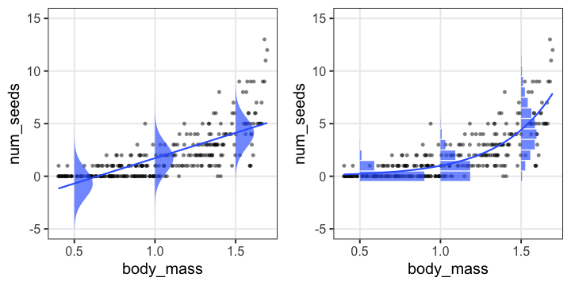
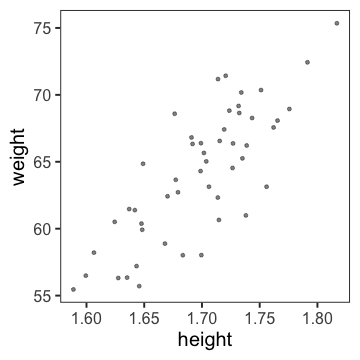
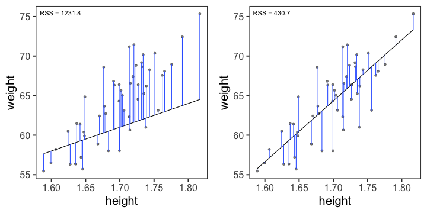
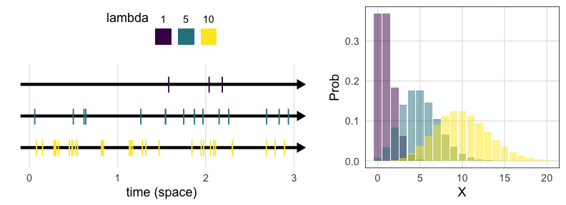
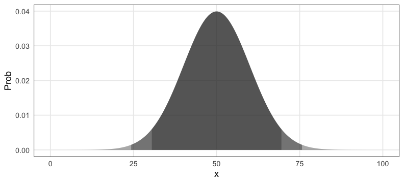
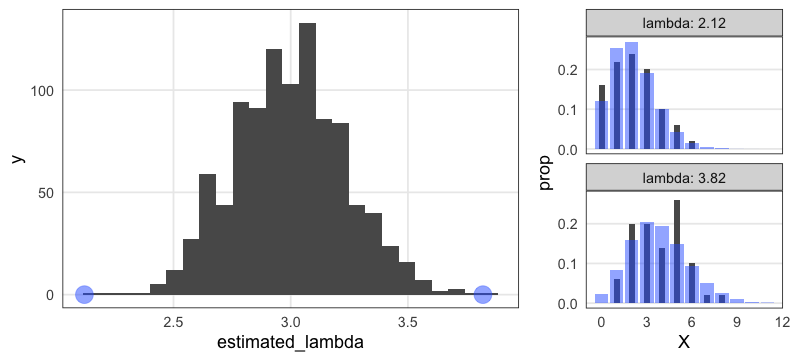

統計モデリング概論 DSHC 2022
(Graduate School of Life Sciences, Tohoku University)
直線あてはめ: 統計モデルの出発点
- 身長が高いほど体重も重い。いい感じ。
(説明のために作った架空のデータ。今後もほぼそうです)
何でもかんでも直線あてはめではよろしくない

- 観察データは常に正の値なのに予測が負に突入してない？
- 縦軸は整数。しかものばらつきが横軸に応じて変化？
何でもかんでも直線あてはめではよろしくない

- 観察データは常に正の値なのに予測が負に突入してない？
- 縦軸は整数。しかものばらつきが横軸に応じて変化？
- データに合わせた統計モデルを使うとマシ
ちょっとずつ線形モデルを発展させていく
線形モデル LM (単純な直線あてはめ)
↓ いろんな確率分布を扱いたい
一般化線形モデル GLM
↓ 個体差などの変量効果を扱いたい
一般化線形混合モデル GLMM
↓ もっと自由なモデリングを！
階層ベイズモデル HBM
データ解析のための統計モデリング入門 久保拓弥 2012 より改変
回帰モデルの2段階
-
Define a family of models: だいたいどんな形か、式をたてる
- 直線: $y = a_1 + a_2 x$
- 対数: $\log(y) = a_1 + a_2 x$
- 二次曲線: $y = a_1 + a_2 x^2$
-
Generate a fitted model: データに合うようにパラメータを調整
- $y = 3x + 7$
- $y = 9x^2$
たぶん身長が高いほど体重も重い
なんとなく $y = a x + b$ でいい線が引けそう

たぶん身長が高いほど体重も重い
なんとなく $y = a x + b$ でいい線が引けそう
じゃあ切片と傾き、どう決める？

最小二乗法 (Ordinary Least Square: OLS)
回帰直線からの残差平方和(RSS)を最小化する。

残差平方和(RSS)が最小となるパラメータを探せ
ランダムに試してみて、上位のものを採用
残差平方和(RSS)が最小となるパラメータを探せ
グリッドサーチ: パラメータ空間の一定範囲内を均等に試す

こうした最適化の手法はいろいろあるけど、ここでは扱わない。
残差平方和(RSS)が最小となるパラメータを探せ
これくらいなら一瞬で計算してもらえる
import statsmodels.formula.api as smf
model = smf.ols("weight ~ height", r.df_weight)
result = model.fit()
result.params
Intercept -66.691613
height 77.075208
dtype: float64
🔰 直線あてはめしてみる
回帰に使えるPythonパッケージ2選:
- statsmodels
- 統計モデリング寄り。今回はこちらを紹介。
- Rに似た書き方や統計量の計算などいろいろ楽。
- scikit-learn
- 機械学習寄り
- 回帰以外のさまざまな手法も統一的な書き方で使える
🔰
2-stats-model.ipynb
をJupyterで開き、順々に実行してみよう。
☕️ 休憩 + 質疑応答
さて、もう少し複雑なあてはめをするために
統計モデルの重要な部品「確率分布」を理解したい。
既にほかの講義で触れられているかもしれませんが、
脊髄反射レベルで身につけたいくらい重要なので時間をかけます。
確率分布
発生する事象(値)と頻度の関係。
手元のデータを数えて作るのが経験分布
e.g., サイコロを12回投げた結果、学生1000人の身長

一方、少数のパラメータと数式で作るのが理論分布。
(こちらを単に「確率分布」と呼ぶことが多い印象）
確率変数$X$はパラメータ$\theta$の確率分布$f$に従う…?
$X \sim f(\theta)$
e.g.,
コインを3枚投げたうち表の出る枚数 $X$ は二項分布に従う。
$X \sim \text{Binomial}(n = 3, p = 0.5)$

一緒に実験してみよう。
試行を繰り返して記録してみる
コインを3枚投げたうち表の出た枚数 $X$
試行1: 表 裏 表 → $X = 2$
試行2: 裏 裏 裏 → $X = 0$
試行3: 表 裏 裏 → $X = 1$ 続けて $2, 1, 3, 0, 2, \ldots$

0と3はレア。1と2が3倍ほど出やすいらしい。
コイントスしなくても $X$ らしきものを生成できる
- コインを3枚投げたうち表の出る枚数 $X$
- $n = 3, p = 0.5$ の二項分布からサンプルする乱数 $X$
↓ サンプル
{2, 0, 1, 2, 1, 3, 0, 2, …}
これらはとてもよく似ているので
「コインをn枚投げたうち表の出る枚数は二項分布に従う」
みたいな言い方をする。逆に言うと
「二項分布とはn回試行のうちの成功回数を確率変数とする分布」
のように理解できる。
統計モデリングの一環とも捉えられる
コイン3枚投げを繰り返して得たデータ {2, 0, 1, 2, 1, 3, 0, 2, …}
↓ たった2つのパラメータで記述。情報を圧縮。
$n = 3, p = 0.5$ の二項分布で説明・再現できるぞ

こういうふうに現象と対応した確率分布、ほかにもある？
有名な確率分布、それに「従う」もの
- 離散一様分布
- コインの表裏、サイコロの出目1–6
- 幾何分布
- 成功率pの試行が初めて成功するまでの失敗回数
- 二項分布
- 成功率p、試行回数nのうちの成功回数
- ポアソン分布
- 単位時間あたり平均$\lambda$回起こる事象の発生回数
- ガンマ分布
- ポアソン過程でk回起こるまでの待ち時間
- (k = 1のとき指数分布と呼ばれる)
- 正規分布
- 確率変数の和、平均値
離散一様分布
同じ確率で起こるn通りの事象のうちXが起こる確率
e.g., コインの表裏、サイコロの出目1–6

🔰 一様分布になりそうな例を考えてみよう
幾何分布 $~\text{Geom}(p)$
成功率pの試行が初めて成功するまでの失敗回数
e.g., コイントスで表が出るまでに何回裏が出るか

\[ \text{Prob}(X = k \mid p) = p (1 - p)^k \]
「初めて成功するまでの試行回数」とする定義もある。
🔰 幾何分布になりそうな例を考えてみよう
二項分布 $~\text{Binomial}(n,~p)$
確率$p$で当たるクジを$n$回引いてX回当たる確率。平均は$np$。

\[ \text{Prob}(X = k \mid n,~p) = \binom n k p^k (1 - p)^{n - k} \]
🔰 二項分布になりそうな例を考えてみよう
ポアソン分布 $~\text{Poisson}(\lambda)$
平均$\lambda$で単位時間(空間)あたりに発生する事象の回数。
e.g., 1時間あたりのメッセージ受信件数、メッシュ区画内の生物個体数

\[ \text{Prob}(X = k \mid \lambda) = \frac {\lambda^k e^{-\lambda}} {k!} \]
二項分布の極限 $(\lambda = np;~n \to \infty;~p \to 0)$。
めったに起きないことを何回も試行するような感じ。
指数分布 $~\text{Exp}(\lambda)$
ポアソン過程の事象の発生間隔。平均は $1 / \lambda$ 。
e.g., メッセージの受信間隔、道路沿いに落ちてる手袋の間隔
\[ \text{Prob}(x \mid \lambda) = \lambda e^{-\lambda x} \]
幾何分布の連続値版。
🔰 ポアソン分布・指数分布になりそうな例を考えてみよう
ガンマ分布 $~\text{Gamma}(k,~\lambda)$
ポアソン過程の事象k回発生までの待ち時間
e.g., メッセージを2つ受信するまでの待ち時間

\[ \text{Prob}(x \mid k,~\lambda) = \frac {\lambda^k x^{k - 1} e^{-\lambda x}} {\Gamma(k)} \]
指数分布をkのぶん右に膨らませた感じ。
shapeパラメータ $k = 1$ のとき指数分布と一致。
正規分布 $~\mathcal{N}(\mu,~\sigma)$
平均 $\mu$、標準偏差 $\sigma$ の美しい分布。よく登場する。
e.g., $\mu = 50, ~\sigma = 10$ (濃い灰色にデータの95%, 99%が含まれる):

\[ \text{Prob}(x \mid \mu,~\sigma) = \frac 1 {\sqrt{2 \pi \sigma^2}} \exp \left(\frac {-(x - \mu)^2} {2\sigma^2} \right) \]
正規分布に近づくものがいろいろある
標本平均の反復(中心極限定理); e.g., 一様分布 [0, 100) から40サンプル
大きい$n$の二項分布

正規分布に近づくものがいろいろある
大きい$\lambda$のポアソン分布

平均値固定なら$k$が大きくなるほど左右対称に尖るガンマ分布

有名な確率分布対応関係ふりかえり
- 離散一様分布
- コインの表裏、サイコロの出目1–6
- 幾何分布
- 成功率pの試行が初めて成功するまでの失敗回数
- 二項分布
- 成功率p、試行回数nのうちの成功回数
- ポアソン分布
- 単位時間あたり平均$\lambda$回起こる事象の発生回数
- ガンマ分布
- ポアソン過程でk回起こるまでの待ち時間
- (k = 1のとき指数分布と呼ばれる)
- 正規分布
- 確率変数の和、平均値。使い勝手が良く、よく登場する。
現実には、確率分布に「従わない」ことが多い
植物100個体から8個ずつ種子を取って植えたら全体で半分ちょい発芽。
親1個体あたりの生存数はn=8の二項分布になるはずだけど、
極端な値(全部死亡、全部生存)が多かった。

「それはなぜ？」と考えて要因を探るのも統計モデリングの仕事。
「普通はこれに従うはず」を理解してこそできる思考。
疑似乱数生成器 Pseudo Random Number Generator
コンピューター上でランダムっぽい数値を出力する装置。
実際には決定論的に計算されているので、
シード(出発点)と呼び出し回数が同じなら出る数も同じになる。
import numpy as np
rng = np.random.default_rng(seed=42) # initialize
rng.integers(1, 6, 4)
# array([1, 4, 4, 3])
rng.integers(1, 6, 4)
# array([3, 5, 1, 4])
rng = np.random.default_rng(seed=42) # re-initialize
rng.integers(1, 6, 8)
# array([1, 4, 4, 3, 3, 5, 1, 4])
シードに適当な固定値を与えておくことで再現性を保てる。
ただし「このシードじゃないと良い結果が出ない」はダメ。
さまざまな「分布に従う」乱数を生成することもできる。
いろんな乱数を生成・可視化して感覚を掴もう
import numpy as np
import matplotlib.pyplot as plt
import seaborn as sns
rng = np.random.default_rng(seed=24601) # Random Number Generator
x = rng.integers(1, 6, 100)
# x = rng.binomial(3, 0.5, 100)
# x = rng.poisson(3, 100)
# x = rng.normal(50, 10, 100)
print(x)
# sns.histplot(x) # for continuous values
sns.countplot(x) # for discrete values
🔰
2-stats-model.ipynb
をJupyterで開き、順々に実行してみよう。
☕️ 休憩 + 質疑応答
データに分布をあてはめたい
ある植物を50個体調べて、それぞれの種子数Xを数えた。

カウントデータだからポアソン分布っぽい。
ポアソン分布のパラメータ $\lambda$ はどう決める？
データに分布をあてはめたい
ある植物を50個体調べて、それぞれの種子数Xを数えた。
カウントデータだからポアソン分布っぽい。
ポアソン分布のパラメータ $\lambda$ はどう決める？
(黒が観察データ。青がポアソン分布。よく重なるのは？)
尤度 (likelihood)
尤もらしさ。 モデルのあてはまりの良さの尺度のひとつ。
あるモデル$M$の下でそのデータ$D$が観察される確率。
定義通り素直に書くと
$\text{Prob}(D \mid M)$
データ$D$を固定し、モデル$M$の関数とみなしたものが尤度関数:
$L(M \mid D)$
モデルの構造も固定してパラメータ$\theta$だけ動かす場合はこう書く:
$L(\theta \mid D)$ とか $L(\theta)$ とか
尤度を手計算できる例
コインを5枚投げた結果 $D$: 表 4, 裏 1
表が出る確率 $p = 0.5$ と仮定:
表が出る確率 $p = 0.8$ と仮定:
$L(0.8 \mid D) > L(0.5 \mid D)$
$p = 0.8$ のほうがより尤もらしい。
種子数ポアソン分布の例でも尤度を計算してみる
ある植物が作った種子を数える。$n = 50$個体ぶん。

この中では $\lambda = 3$ がいいけど、より尤もらしい値を求めたい。
最尤推定 Maximum Likelihood Estimation
扱いやすい 対数尤度 (log likelihood) にしてから計算する。
一階微分が0になる $\lambda$ を求めると…標本平均と一致。

最尤推定を使っても“真のλ”は得られない
今回のデータは真の生成ルール“$X \sim \text{Poisson}(\lambda = 3.0)$”で作った。
「50個体サンプル→最尤推定」を1,000回繰り返してみると:

サンプルの取れ方によってはかなりズレた推定をしてしまう。
(標本データへのあてはまりはかなり良く見えるのに！)
サンプルサイズを増やすほどマシにはなる
“$X \sim \text{Poisson}(\lambda = 3.0)$”からnサンプル→最尤推定を1,000回繰り返す:

Q. じゃあどれくらいのサンプル数nを確保すればいいのか？
A. 推定したい統計量とか、許容できる誤差とかによる。
すべてのモデルは間違っている
確率分布がいい感じに最尤推定できたとしても、
それはあくまでモデル。仮定。近似。
All models are wrong, but some are useful. — George E. P. Box
統計モデリングの道具 — まとめ
- 確率変数 $X$
- 確率分布 $X \sim f(\theta)$
- 少ないパラメータ $\theta$ でばらつきの様子を表現
- この現象はこの分布を作りがち(〜に従う) という知見がある
- 尤度
- あるモデルでこのデータになる確率 $\text{Prob}(D \mid M)$
- データ固定でモデル探索 → 尤度関数 $L(M \mid D),~L(\theta \mid D)$
- 対数を取ったほうが扱いやすい → 対数尤度 $\log L(M \mid D)$
- これを最大化するようなパラメータ $\hat \theta$ 探し ＝ 最尤法
🔰 尤度の練習問題 @2-stats-model.ipynb
サイコロを10回振ったら6の目が3回出た。
- 6の目の出る確率が1/6だとした場合の尤度は?
- 6の目の出る確率が0.2だとした場合の尤度は?
- 横軸を6の目の出る確率、縦軸を対数尤度とするグラフを描こう。
- このサイコロで6の目が出る確率を最尤推定しよう。
数学で解ければ優。Pythonで見つければ良。目分量・勘で可。
- ヒント
- 確率pで当たるクジをn回引いてk回当たる確率、と同じ計算を使う。
参考文献
- データ解析のための統計モデリング入門 久保拓弥 2012
- StanとRでベイズ統計モデリング 松浦健太郎 2016
- RとStanではじめる ベイズ統計モデリングによるデータ分析入門 馬場真哉 2019
- データ分析のための数理モデル入門 江崎貴裕 2020
- 分析者のためのデータ解釈学入門 江崎貴裕 2020
- 統計学を哲学する 大塚淳 2020